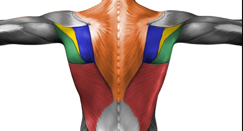

Наш ПРОДВИНУТЫЙ блок начинается с повторного разбора всех упражнений, которые составляют нашу тренировочную программу. На этот раз мы будем рассматривать их немного в другом ключе. Теперь главный акцент мы будем делать на работе мышц в разных вариантах их исполнения и на том, как задействовать те или иные мышцы, соответственно. Собственно говоря, есть всего две вещи, которые нужно знать, и о которых мы не рассказывали при обзоре подтягиваний на турнике в БАЗОВОМ блоке.
Хваты и Плоскости
Все знают, что существуют разные хваты, и все знают, что для наибольшего эффекта нужно эти хваты чередовать.
Давайте поговорим подробнее о том, что именно делают конкретные хваты и в каких случаях их стоит применять. Представьте себе свой позвоночник, окей? Чем уже ваш хват, то есть чем ближе руки находятся относительно позвоночника, тем лучше вы прорабатываете мышцы, которые находятся рядом с позвоночником. Чем шире хват, тем вы больше прорабатываете мышцы, которые находятся дальше от позвоночника. Фактически, меняя ширину хвата, вы можете смещать акцент нагрузки с одних мышц на другие, прорабатывая всю спину!
Для того чтобы вы лучше понимали, вот серия картинок, на каждой из которых выделена одна из мышц спины:

Красная — Широчайшая
Оранжевая — Трапециевидная (под ней находится ромбовидная)
Синяя — Подостная
Зеленая — Большая круглая
Желтая — Малая круглая
Следует обратить ваше внимание на тот факт, что самая большая мышца спины — широчайшая — едина, если можно так выразиться. То есть, в отличие, скажем от грудных мышц (которые состоят из трех частей), или от мышц-разгибателей руки (трицепс, состоит из трех частей тоже), или от мышц-сгибателей руки (бицепс, состоит из двух частей), широчайшая это ОДНА мышца. Поэтому, меняя ширину хвата нельзя прокачать разные части широчайшей мышцы! Но за счет смены хвата смещается акцент с широчайших на другие мышцы и они включаются в работу и т. д.
Здесь же следует отметить, что хотя в подтягиваниях и задействуются мышцы рук, но в очень небольшой степени (и в основном только в конце движения, когда происходит основное сгибание в локтевом суставе, о механике мы ещё поговорим в конце недели). И если стоит задача именно прокачки мышц, то здесь одной только игрой с разными хватами обойтись не получится. Необходимо будет начать делать совершенно иные варианты подтягиваний, в которых вся работа будет изолированно совершаться в локтевом суставе.
Также в интернете ходит забавная информация о том, что тяга в вертикальной плоскости работает на ширину спины, в то время как все подтягивания, где тяга идёт в горизонтальной плоскости (например, австралийские подтягивания или горизонтальные тяги), работают на толщину спины. И хотя мы уже косвенно коснулись этого момента в инфопосте про популярные мифы силовых тренировок, хотим напомнить вам ещё раз, что мышцы могут делать всего 2 вещи: либо расти в объеме, либо уменьшаться. И делают они это равномерно, а не так, чтобы в ширину мышца увеличилась, а в толщину нет.
Хваты и работа в разных плоскостях, прежде всего, важны для работы плечевых суставов. Если в горизонтальной тяге самым естественным положением будет хват сверху (он ещё называется пронированный), то в вертикальной тяге — нейтральный (параллельный) хват. Опять же, чередовать хваты стоит, чтобы не нагружать суставы в одной и той же плоскости каждый день (целевые мышцы-то работают всегда, а вот мышцы-антагонисты могут задействоваться слегка по разному).
СПРАВКА
Мышцы-антагонисты представляют собой мышечные группы или мышцы, выполняющие противоположные анатомические функции. К примеру, мышцы спины выполняют тяговые движения, мышцы груди — жимовые.
Тренироваться стоит с теми хватами, которые удобны и естественны. Если по каким-либо причинам за голову тянуться больно/дискомфортно, то и не стоит заморачиваться над такой техникой.
Дополнительный момент в плане хватов заключается в толщине перекладины, на которой вы подтягиваетесь. Чем толще перекладина, тем больше нагрузка на хват (ну и лучше защита от мозолей тоже), соответственно, тем больше устают ваши предплечья. И это может быть как плюсом, так и минусом. Плюсом, потому что, регулярно подтягиваясь на толстых перекладинах, вы хорошо прокачаете свои предплечья и силу хвата. А минусом, потому что ваши предплечья будут сдавать раньше, чем спина, а это значит, что на толстых перекладинах спину прокачивать хуже (она просто не будет дополучать нагрузку необходимую для роста).
Количество или Качество
Одно дело, если вы хотите увеличить количество повторений, тогда вам следует тренироваться таким образом, чтобы увеличивать количество. Другое дело, если ваша цель - увеличить объем мышц, тогда и ваши тренировки должны быть построены соответствующим образом. Отличие заключается в том, что в первом случае каждое повторение вам нужно выполнить с минимальными затратами сил (чтобы их хватило на как можно большее количество повторений), а во втором - с максимальными. В первом случае вам нужно думать об оптимизации техники выполнения, во втором - вы должны научиться чувствовать работу мышц.
На сегодня всё!